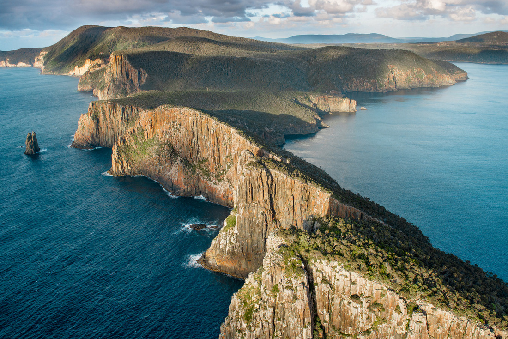
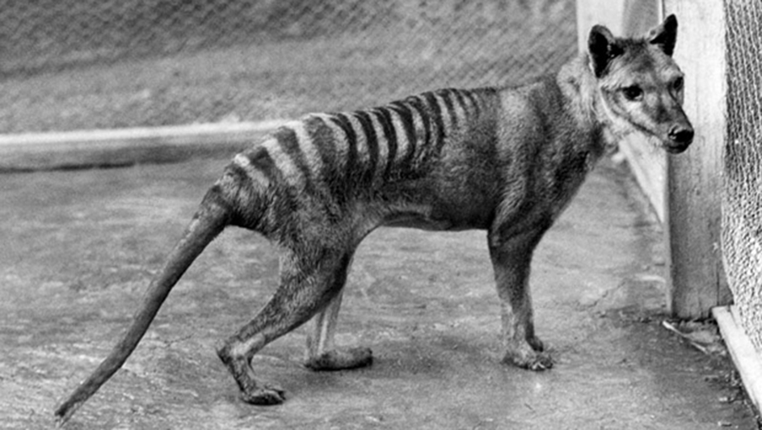
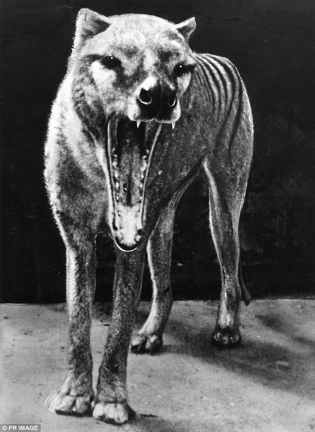
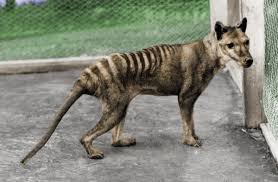

Introduction
The thylacine is one of the most fabled animals in the world. Yet, despite its fame, it is one of the least understood of Tasmania's native animals. European settlers were puzzled by it, feared it and killed it when they could. After only a century of white settlement the animal had been pushed to the brink of extinction. Full details of the demise of the thylacine can be found at our threatened species site.
Description
The thylacine looked like a large, long dog, with stripes, a heavy stiff tail and a big head. Its scientific name, Thylacinus cynocephalus, means pouched dog with a wolfs head. Fully grown it measured about 180 cm (6 ft) from nose to tail tip, stood about 58 cm (2 ft) high at the shoulder and weighed up to 30 kg. The short, soft fur was brown except for 13 - 20 dark brown-black stripes that extended from the base of the tail to almost the shoulders. The stiff tail became thicker towards the base and appeared to merge with the body. Thylacines were usually mute, but when anxious or excited made a series of husky, coughing barks. When hunting, they gave a distinctive terrier-like, double yap, repeated every few seconds. Unfortunately there are no recordings. The thylacine was shy and secretive and always avoided contact with humans. Despite its common name, 'tiger' it had a quiet, nervous temperament compared to its little cousin, the Tasmanian devil. Captured animals generally gave up without a struggle, and many died suddenly, apparently from shock. When hunting, the thylacine relied on a good sense of smell, and stamina. It was said to pursue its prey relentlessly, until the prey was exhausted. The thylacine was rarely seen to move fast, but when it did it appeared awkward. It trotted stiffly, and when pursued, broke into a kind of shambling canter.
Habits
Tasmanian tigers used to live in wetlands, grasslands, and eucalyptus forests of continental Australia. They lived all throughout New Guinea. They were mostly found in the coastal heath and woodlands. They had a normal habitat range of 40 – 80 sq. km (15 – 31 sq. mi). Tigers were not territorial. They used to spend most of the daytime in hollow tree trunks or small caves. Tasmanian tiger was usually regarded as hesitant species in that it tended to disappear when one approaches.
Environment
Thylacine footprints could be distinguished from other native or introduced animals; unlike foxes, cats, dogs, wombats or Tasmanian devils, thylacines had a very large rear pad and four obvious front pads, arranged in almost a straight line. The hindfeet were similar to the forefeet but had four digits rather than five. Their claws were non-retractable.More detail can been seen in a cast taken (below and to the left) from a freshly dead thylacine. The cast shows the planter pad in more detail and shows that the planter pad is tri-lobal in that it exhibits three distinctive lobes. It is a single planter pad divided by three deep grooves. The distinctive planter pad shape along with the asymmetrical nature of the foot makes it quite different from animals such as dogs or foxes. This cast dates back to the early 1930s and is part of the Museum of Victoria's thylacine collection.
